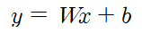
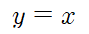
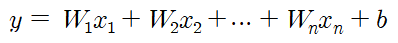

1. Abstract
- 지도학습(Supervised learning) 중 하나이다.
- 시험 공부하는 시간을 늘리면 늘릴수록 성적이 잘 나오고, 집의 평수가 클수록 집의 매매 가격은 비싼 경향이 있다. 이는 어떤 요인의 수치에 따라서 특정 요인의 수치가 영향을 받고있다고 말할 수 있다. 즉, 어떤 변수의 값에 따라서 특정 변수의 값이 영향을 받고 있다고 볼 수 있다. 다른 변수의 값을 변하게 하는 변수를 x, 변수 x에 의해서 값이 종속적으로 변하는 변수를 y라고 해보자. 이때 변수 x의 값은 독립적으로 변할 수 있는 것에 반해, y의 값은 계속해서 x의 값에 의해서 종속적으로 결정되므로 x를 독립 변수, y를 종속 변수라고도 한다.
- 선형 회귀는 한 개 이상의 독립 변수 x와 y의 선형 관계를 모델링한다. 만약, 독립 변수 x가 1개라면 단순 선형 회귀(Simple Linear Regression)라고 하고 여러 개라면 다중 선형 회귀(Multiple Linear Regression)이라고 한다.
- 단순 선형 회귀(Simple Linear Regression)
- 시험 공부하는 시간을 늘리면 늘릴수록 성적이 잘 나오고, 집의 평수가 클수록 집의 매매 가격은 비싼 경향이 있다. 이는 어떤 요인의 수치에 따라서 특정 요인의 수치가 영향을 받고있다고 말할 수 있다. 즉, 어떤 변수의 값에 따라서 특정 변수의 값이 영향을 받고 있다고 볼 수 있다. 다른 변수의 값을 변하게 하는 변수를 x, 변수 x에 의해서 값이 종속적으로 변하는 변수를 y라고 해보자. 이때 변수 x의 값은 독립적으로 변할 수 있는 것에 반해, y의 값은 계속해서 x의 값에 의해서 종속적으로 결정되므로 x를 독립 변수, y를 종속 변수라고도 한다.
- 선형 회귀는 한 개 이상의 독립 변수 x와 y의 선형 관계를 모델링한다. 만약, 독립 변수 x가 1개라면 단순 선형 회귀(Simple Linear Regression)라고 하고 여러 개라면 다중 선형 회귀(Multiple Linear Regression)이라고 한다.
- 단순 선형 회귀(Simple Linear Regression)

위의 수식은 단순 선형 회귀의 수식을 조여준다. 여기서 독립 변수 x와 곱해지는 값 W를 머신 러닝에서는 가중치(weight), 별도로 더해지는 값 b를
편향(bias)라고 한다. 직선의 방정식에서는 각각 직선의 기울기와 절편을 의미하며, W와 b가 없이 y와 x란 수식은 y는 x와 같다는 하나의 식밖에 표현하지 못한다. 그래프
상으로 말하면, 하나의 직선밖에 표현하지 못한다.

다시 말해 W와 b의 값을 적절히 찾아내면 x와 y의 관계를 적절히 모델링한 것이 된다.
- 다중 선형 회귀(Multiple Linear Regression)
- 다중 선형 회귀(Multiple Linear Regression)

집의 매매 가격은 단순히 집의 평수가 크다고 결정되는 게 아니라 집의 층의 수, 방의 개수, 지하철 역과의 거리와도 영향이 있다. 이러한 다수의 요소를 가지고 집의 매매
가격을 예측하려고 할 때, y는 여전히 1개이지만 이제 x는 1개가 아니라 여러 개가 되었다. 이를 다중 선형 회귀라고 한다.
- 최소제곱법(Methods of least squares)을 이용하여 계산한다.
- 최소제곱법(Methods of least squares)을 이용하여 계산한다.

근사적으로 구하려는 해와 실제 해의 오차의 제곱의 합이 최소가 되는 해를 구하는 방법이다.
2. 흐름도 및 시각화
데이터 입력 받기
keyboard_arrow_right
x, y좌표 평균 구하기
keyboard_arrow_right
최소제곱법을 이용하여 기울기, y절편 구하기
keyboard_arrow_right
예측 선형 함수 그리기
keyboard_arrow_right
x = 70 값 예측해보기
3. code
'''
A linear regression learning algorithm example using TensorFlow library.
Author: Aymeric Damien
Project: https://github.com/aymericdamien/TensorFlow-Examples/
'''
from __future__ import print_function
import tensorflow as tf
from numpy import *
import numpy
import matplotlib.pyplot as plt
rng = numpy.random
# Parameters
learning_rate = 0.0001
training_epochs = 1000
display_step = 50
# Training Data
train_X = numpy.asarray([3.3,4.4,5.5,6.71,6.93,4.168,9.779,6.182,7.59,2.167,
7.042,10.791,5.313,7.997,5.654,9.27,3.1])
train_Y = numpy.asarray([1.7,2.76,2.09,3.19,1.694,1.573,3.366,2.596,2.53,1.221,
2.827,3.465,1.65,2.904,2.42,2.94,1.3])
train_X=numpy.asarray(train_X)
train_Y=numpy.asarray(train_Y)
n_samples = train_X.shape[0]
# tf Graph Input
X = tf.placeholder("float")
Y = tf.placeholder("float")
# Set model weights
W = tf.Variable(rng.randn(), name="weight")
b = tf.Variable(rng.randn(), name="bias")
# Construct a linear model
pred = tf.add(tf.multiply(X, W), b)
# Mean squared error
cost = tf.reduce_sum(tf.pow(pred-Y, 2))/(2*n_samples)
# Gradient descent
optimizer = tf.train.GradientDescentOptimizer(learning_rate).minimize(cost)
# Initializing the variables
init = tf.global_variables_initializer()
# Launch the graph
with tf.Session() as sess:
sess.run(init)
# Fit all training data
for epoch in range(training_epochs):
for (x, y) in zip(train_X, train_Y):
sess.run(optimizer, feed_dict={X: x, Y: y})
# Display logs per epoch step
if (epoch+1) % display_step == 0:
c = sess.run(cost, feed_dict={X: train_X, Y:train_Y})
print("Epoch:", '%04d' % (epoch+1), "cost=", "{:.9f}".format(c), \
"W=", sess.run(W), "b=", sess.run(b))
print("Optimization Finished!")
training_cost = sess.run(cost, feed_dict={X: train_X, Y: train_Y})
print("Training cost=", training_cost, "W=", sess.run(W), "b=", sess.run(b), '\n')
# Graphic display
plt.plot(train_X, train_Y, 'ro', label='Original data')
plt.plot(train_X, sess.run(W) * train_X + sess.run(b), label='Fitted line')
plt.legend()
plt.show()